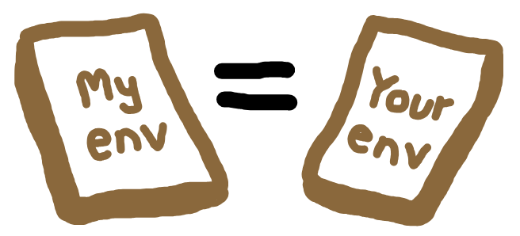

Dependency management
üîó Reproducibility guidelines:
- Heather et al. 2025: List dependencies and versions.
- NHS Levels of RAP (ü•à): Repository includes dependency information.
Dependency management is about keeping track of the environment used for your project. This includes the version of your programming languages, any packages used, and their versions.
It acts like a time capsule, allowing you to return to a project later and run it with the exact same packages and versions, reproducing the results generated previously.

Dependency management enables you to isolate environments for different projects. Each project can have it’s own set of dependencies, preventing conflicts and making it easy to switch between projects.

It is also important for collaboration, so that everyone working on the project is using the same environment.

Python tools for dependency management
There are lots of tools available for managing dependencies in isolated environments in python. A few of the most popular tools include venv, conda, and poetry.
In this book, we will use conda, as it allows us to specify a python version, so each environment we create can have a different specific version of python. This is not possible with venv and poetry, which just manage the package dependencies, and will just use the system python.
Mamba is a drop-in replacement for conda that is often preferred as it is:
- Faster than conda.
- Better at dealing with dependency conflicts, providing more helpful messages in cases where environments fail to builds due to clashing requirements of different packages.
To use mamba, simply replace conda in all the commands below with mamba.
Installing conda (or mamba)
Refer to the conda or mamba documentation for the latest instructions on installing these for your operating system (windows, mac or linux).
Setting up our conda environment
1. Create an environment file. In the project root, we create environment.yaml.
touch environment.yamlWithin this file, we add three sections:
- Name. The environment name.
- Channels. Where to find packages (e.g.
conda-forge). - Dependencies. The packages you need.
When first creating our environment, we just list the dependencies we know we need at this point - we can always add more later! At the start of a project, you might only know one: python.
As an example, we will add simpy and python.
name: des-example
channels:
- conda-forge
dependencies:
- python
- simpy2. Build and activate the environment. In the command line, run the following to create your environment:
conda env create --file environment.yamlYou can then activate it (replacing des-example with your environment name):
conda activate des-exampleTo confirm your environment contains the expected packages, run:
conda listThis will output a list of packages, versions, builds and channels. For example, it may look similar to:
(des-example) amy@xps:~/Documents/hospital-des$ conda list
# packages in environment at /home/amy/mambaforge/envs/des-example:
#
# Name Version Build Channel
_libgcc_mutex 0.1 conda_forge conda-forge
_openmp_mutex 4.5 2_gnu conda-forge
bzip2 1.0.8 h4bc722e_7 conda-forge
ca-certificates 2025.1.31 hbd8a1cb_1 conda-forge
ld_impl_linux-64 2.43 h712a8e2_4 conda-forge
libexpat 2.7.0 h5888daf_0 conda-forge
libffi 3.4.6 h2dba641_1 conda-forge
libgcc 14.2.0 h767d61c_2 conda-forge
libgcc-ng 14.2.0 h69a702a_2 conda-forge
libgomp 14.2.0 h767d61c_2 conda-forge
liblzma 5.8.1 hb9d3cd8_0 conda-forge
libmpdec 4.0.0 h4bc722e_0 conda-forge
libsqlite 3.49.1 hee588c1_2 conda-forge
libuuid 2.38.1 h0b41bf4_0 conda-forge
libzlib 1.3.1 hb9d3cd8_2 conda-forge
ncurses 6.5 h2d0b736_3 conda-forge
openssl 3.5.0 h7b32b05_0 conda-forge
pip 25.0.1 pyh145f28c_0 conda-forge
python 3.13.3 hf636f53_101_cp313 conda-forge
python_abi 3.13 7_cp313 conda-forge
readline 8.2 h8c095d6_2 conda-forge
simpy 4.1.1 pyhd8ed1ab_1 conda-forge
tk 8.6.13 noxft_h4845f30_101 conda-forge
tzdata 2025b h78e105d_0 conda-forge3. Specify versions. For reproducibility, it’s best to specify the exact package versions in you environment.yaml. If you’re starting from scratch, you may not know which versions you need, so you can leave them out initially, as we did in step 1.
However, now that we have built our environment (which used the latest versions as none were specified), it is important to then record your versions in the environment.yaml. These are the versions you saw when running conda list. For example:
name: des-example
channels:
- conda-forge
dependencies:
- python=3.13.3
- simpy=4.1.14. Setting up the full environment for this book. When working on a project from scratch, you will often build up your environment organically and iteratively as you find more packages you want to use. However, to follow along with this book and ensure everything works as expected, you can use the full environment provided below. Copy this into your environment.yaml (feel free to alter the name!):
name: des-example
channels:
- conda-forge
dependencies:
- ipykernel=6.29.5
- jinja2=3.1.5
- joblib=1.4.2
- nbconvert=7.16.6
- nbformat=5.10.4
- nbqa=1.9.0
- numpy=2.2.2
- pandas=2.2.3
- pip=25.0
- plotly_express=0.4.1
- pylint=3.3.4
- pytest=8.3.4
- pytest-xdist=3.6.1
- python=3.13.1
- rich=13.9.4
- simpy=4.1.1
- pip:
- kaleido==0.2.1
- sim-tools==0.8.0Then update your environment to include these packages (after running conda activate des-example) with:
conda env update --file environment.yaml --pruneFurther information
- “An unbiased evaluation of environment management and packaging tools” from Anna-Lena Popkes 2024
- “Python dependency management is a dumpster fire” from Niels Cautaerts 2024
R tools for dependency management
The most popular tool for managing dependencies in R is renv. This replaced and improved upon the previous tool, Packrat.
Renv will create isolated environments with the specific packages and their versions for a project. However, it won’t manage the version of R used - the version of R used is simply whatever is installed on your system.
Setting up renv
1. Create an R project. It’s best to use renv within an R project. In RStudio, select File > New Project…, and choose Existing Directory.
Navigate to your project directory, then select Create Project.
This creates:
.Rproj: project file (contains some settings for the project)..Rproj.user: hidden folder with temporary project files (e.g. auto-saved source documents).
Note: R projects are commonly created and managed by RStudio. If you are not using RStudio, they can be difficult to set-up, as they have to be created manually. However, it is possible to use renv without an R project, as discussed in this GitHub issue. This can be done by using setwd() to set your repository as the current working directory, and then continuing with the steps below, running renv::init().
2. Initialise renv. In your R console:
renv::init()This creates:
renv/: stores packages for the project.renv.lock: records packages and the exact versions used..Rprofile: ensuresrenvactivates when the project opens.
With renv initialised, you will now have an empty project library, just containing renv, as you can see from viewing renv.lock (example below). This is isolated from your previous projects, and from here, you can install the packages relevant for your current project.
Example renv.lock:
{
"R": {
"Version": "4.4.1",
"Repositories": [
{
"Name": "CRAN",
"URL": "https://packagemanager.posit.co/cran/latest"
}
]
},
"Packages": {
"renv": {
"Package": "renv",
"Version": "1.0.7",
"Source": "Repository",
"Repository": "CRAN",
"Requirements": [
"utils"
],
"Hash": "397b7b2a265bc5a7a06852524dabae20"
}
}
}
Adding packages to the environment
It is possible to simply install packages using renv::install("packagename") or install.packages("packagename").
However, we recommend using a DESCRIPTION file. This is because it allows you to keep a record of the main packages you installed. You’ll generate a clear, readable summary of the main dependencies for your project.
Why use a DESCRIPTION file?
- Clear requirements. The
DESCRIPTIONfile provides a clear summary of your project’s main pages. This is much easier to read thanrenv.lock, which lists all the packages and their dependencies, making it cumbersome if you just want to see the key packages. - Consistency with package development. If your project is (or might become) an R package, the
DESCRIPTIONfile is the standard way to declare dependencies. - Alternative for environment recreation. While
renv.lockis the primary tool for restoring the exact environment, having aDESCRIPTIONfile is a valuable backup. If you encounter issues withrenv.lock, you (or collaborators) can useDESCRIPTIONto reinstall the main dependencies - with more information on this below in the section on recreating environments. - Explicit snapshots. If you want precise control over what is included in
renv.lock, aDESCRIPTIONfile enables you to use “explicit” snapshots. These mean only the packages listed inDESCRIPTION(and their dependencies) are recorded - as is covered below in the step on updating yourrenv.lockfile.
1. Create DESCRIPTION file. Run in the terminal:
touch DESCRIPTIONOpen the file and copy in the template below. You can customise some of the meta-data (e.g. package, title, authors, description).
This is a standard template. You can create an identical file with usethis by running usethis::use_description(). However, we can just create it from scratch, which helps to minimise our dependencies.
Package: packagename
Title: What the Package Does (One Line, Title Case)
Version: 0.0.0.9000
Authors@R:
person("First", "Last", , "first.last@example.com", role = c("aut", "cre"))
Description: What the package does (one paragraph).
License: `use_mit_license()`, `use_gpl3_license()` or friends to pick a
license
Encoding: UTF-8
Roxygen: list(markdown = TRUE)
RoxygenNote: 7.0.02. List dependencies. In DESCRIPTION, dependencies are listed under two headings:
Imports: for required packages.Suggests: for optional/development packages.
For most projects (especially non-packages), it’s fine to just list all your dependencies under Imports for simplicity, as - assuming you’re using the implicit renv snapshot type (described below) - renv will only detect and install packages listed under Imports and used in your scripts (and not necessarily those under Suggests).
The distinction betweeen Imports and Suggests is more relevant when constructing your research as an R package, as it will distinguish between those necessary for the core simulation and those for other analysis and tests.
At the very beginning of your project, your DESCRIPTION file might only include a few packages. For example, if you are starting with just the simmer package, your Imports section would look like this:
Imports:
simmerAs your project develops and you find yourself using additional packages, simply add each new dependency to the Imports section of your DESCRIPTION file.
If you are following along with this book, you can use the following DESCRIPTION snippet to include all the packages needed to run the provided code in this book:
Imports:
simmer,
magrittr,
dplyr,
purrr,
rlang,
tidyr,
tidyselect,
future,
future.apply,
ggplot2,
tibble,
gridExtra,
R6
Suggests:
testthat (>= 3.0.0),
patrick,
lintr,
devtools,
xtable,
data.table,
mockery
Config/testthat/edition: 3Note: In the R Packages book, they recommend that versions are not specified in DESCRIPTION. Instead, they suggest that no version is specified - or that a minimum version is specified, if you know that an older version of specific package/s would break the code. This is why it is important to also create an renv.lock file (as below), so you do have a record of the exact versions used.
3. Install packages from DESCRIPTION. Run the following command in your console. This will install the packages from DESCRIPTION, and will determine and install the dependencies of those packages too.
renv::install()4. Update renv.lock. To take a snapshot of your environment and update your renv.lock file, run:
renv::snapshot()This will update the lock file with a full list of the exact packages and dependencies, including the versions you have installed, providing a clear record of your working environment.
There are three snapshot types:
- Implicit - records any packages (and their dependencies) listed in
DESCRIPTIONor used in your code. - Explicit - only records packages (and their dependencies) listed in
DESCRIPTION. - All - records all packages in your environment.
The default snapshot type is implicit, and we recommend this approach. This is because it will catch any packages you are using but that you have forgot to add to DESCRIPTION (although it is best to remember to record these in DESCRIPTION, so you have a nice clear list of packages, and don’t have to delve into renv.lock if you’re having issues).
The downside to this snapshot type if that it may include unnecessary packages if you include old scripts in your repository that use packages you no longer need. However, this can be avoided by removing old scripts (good practice!).
If you want to check your snapshot type, run this command in the R console:
renv::settings$snapshot.type()You can then change it if desired using one of:
renv::settings$snapshot.type("implicit")
renv::settings$snapshot.type("explicit")
renv::settings$snapshot.type("all")Recreate an existing environment
When you want to recreate an environment—such as for an old project or when collaborating—you have two main options, depending on which files are available:
| Method | What does it install? | Best for… |
|---|---|---|
From renv.lock |
Installs the exact package versions (and their dependencies) used previously | Full reproducibility; restoring the original environment exactly |
From DESCRIPTION |
Installs the main packages listed (and their dependencies), but uses the latest available versions (unless specified) | Getting started quickly or if renv.lock is missing or problematic |
1. Restoring from renv.lock (preferred). If the project includes an renv.lock file, use this as your first option. This file records the exact versions of all packages used, enabling you to recreate the environment as it was originally (*except for R version and operating system differences).
To restore the environment, run in your R console:
renv::restore()This will attempt to install all packages at the precise versions specified.
Occasionally, you may encounter issues - such as conflicts, unavailable packages, or operating system differences - especially with older projects or across different systems.
2. Rebuilding from DESCRIPTION. If renv.lock is unavailable or causes problems, you can use the DESCRIPTION file. This file lists the main package dependencies, but typically does not specify exact versions (unless you have set minimum versions for specific needs).
To install packages listed in DESCRIPTION, run:
renv::install()This will install the latest available versions of the listed packages and their dependencies. This approach is less precise than using renv.lock, so results may differ slightly from the original environment, especially if package updates have introduced changes.
In theory, the R ecosystem aspires to maintain backwards compatability, meaning that code written for older package versions should continue to work with newer ones. However, in practice, there is no strict guarantee of backward compatibility in R, either for the core language or for contributed packages.
As discussed in the R packages book:
“If we’re being honest, most R users don’t manage package versions in a very intentional way. Given the way
update.packages()andinstall.packages()work, it’s quite easy to upgrade a package to a new major version without really meaning to, especially for dependencies of the target package. This, in turn, can lead to unexpected exposure to breaking changes in code that previously worked. This unpleasantness has implications both for users and for maintainers.”
Hence, using a lockfile like renv.lock is the only reliable way to ensure that your environment is recreated exactly as it was - but DESCRIPTION can serve as a valuable back-up when this doesn’t work, and otherwise just as a handy summary of the main packages.
3. If neither file is provided. If you have neither a renv.lock nor a DESCRIPTION file, you can try to create a DESCRIPTION file based on your knowledge of the project and its required packages.
System dependencies
Some R packages require external system libraries. The exact requirements will depend on which packages you use, what operating system you have, and whether you have used R before.
If these system libraries are missing, package installation may fail, even if you have the correct R package versions.
For example, working on Ubuntu, we found that we had to install the following system dependencies for igraph:
sudo apt install build-essential gfortran
sudo apt install libglpk-dev libxml2-devYou should list any system dependencies that you are aware of in your project’s README or setup instructions.
Summary
We can use renv to create a reproducible environment in R. In the process above, we generated two key files:
DESCRIPTION- lists project’s primary packages with any minimum version requirements, but not exact versions.renv.lock- complements this by recording the precise versions of all packages and their dependencies.
These work together to both provide (a) a comprehensive record of your project environment, and (b) enable yourself or others to reconstruct the environment.
Further information
- “9. DESCRIPTION” from R Packages by Hadley Wickham and Jennifer Bryan.
- “21. Lifecycle” from R Packages by Hadley Wickham and Jennifer Bryan.